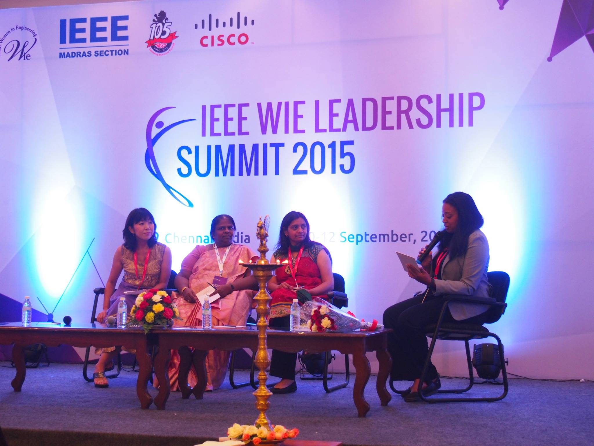

IEEE Women in Engineering (WIE) is the largest international professional organization dedicated to promoting women engineers and scientists. Women in Engineering Affinity Group of IEEE Madras Section was started in the year 2006, by Dr.Ramalatha Marimuthu. Since inception, the affinity group has experienced consistent growth both in terms of number of student branches and members. The affinity group strives to meet the mission and vision of WIE through quality professional, social and outreach activities. The affinity group has been recognized by R10 for its superior activities, with the “R10 WIE Section AG of The Year Award”, in 2012.The affinity group focuses on improving the enrolment of girl children in Engineering through Career Guidance and Counselling programs. The spectrum events organized by the affinity group benefits a larger women community, including rural women.
